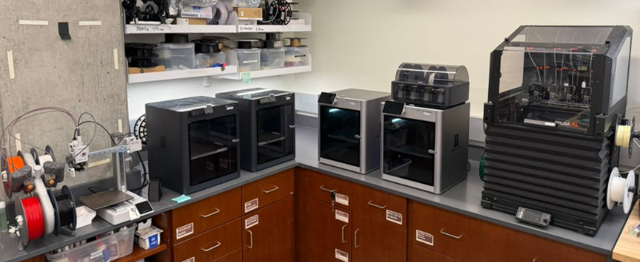
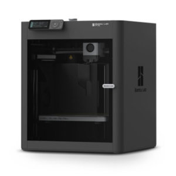
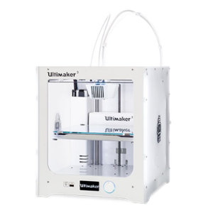

3D Printers
The CRB Makerspace has access to several Fused Deposition Modeling (FDM) 3D printers.

Hazard level
LOW
Warning
- Hot surfaces: nozzle (180-260°C) and heated bed (50-110°C) can cause severe burns
- Moving parts can pinch or crush fingers
- Risk of inhalation of ultrafine particles and VOCs during printing
Safety
- Do not touch hotend. Print beds and nozzles can exceed 200°C. Always assume hot surfaces until printer indicates it has cooled.
- Keep hands, hair, and clothing away from moving parts. Tie back long hair and secure loose sleeves or jewelry.
- Use only approved materials. PLA is the default; other filaments must be approved by staff due to fumes and print settings.
- Ensure that the first layer prints correctly before leaving.
- Do not use metal tools on print surfaces. They can damage the finish and affect adhesion. Use the provided plastic tools to remove parts and adhesives as directed.
- If something seems wrong (unusual noises, smoke/odors, spaghetti print), pause the job and notify staff immediately.
- Know how to pause/stop. Familiarize yourself with the emergency stop/pause on the specific printer before starting.
- Remove parts, replace print bed, and tidy up when finished.
Printers
| Device | Image | Resources | Notes |
|---|---|---|---|
| Bambu Lab X1 Carbon |  |
Manual | High speed FDM printing. Support for up to 4 materials with AMS. |
| Bambu Lab P1S |  | Manual | High speed FDM workhorse. Great for general purpose prints in PLA. |
| Bambu Lab A1 mini |  |
Manual | Smallest print volume. AMS Lite available. |
| Original Prusa XL |  |
Manual | Largest print volume. Multi-material support with 5 independent printheads. |
| Ultimaker 3 |  | Manual | Dual nozzle printing. Compatible with large Ultimaker library of materials. |
Materials
Parts in the CRB Makerspace are generally printed with PLA, or polylactic acid, which is a versatile, biodegradable plastic derived from renewable resources like corn starch or sugarcane. Other materials are available upon request. We usually use a 0.4mm nozzle, though smaller or larger nozzles may be available if needed for specific projects.
Do not attempt to change or reload filaments yourself without authorization. Ask for assistance if a change or replacement is needed.
Guide
- You must schedule the printer for every print job. This helps us track usage and provides contact information if there are issues.
- Ask for assistance for changing filament.
- Long or large prints (4+ hours) must be coordinated with Raphael.
- Remove parts and clean the build surface when your print is done; leave the printer ready for the next user.
- The 3D printers must be started in person. They are not connected to the network (on purpose). Set up the print with the printers software (e.g. Bambu Studio or PrusaSlicer), add the file to a microSD card or USB drive, and start the print on the device. ## Ensure the correct printer type, material, and build plate is selected for use.
- Watch the first layer complete before leaving. Most failures occur on the first layer.
- Promptly remove prints when complete. Do not use metal tools to remove parts from the print bed. Use plastic tools instead to prevent damage to the print surfaces.
- Clean up all pieces and reinstall the build plate in the printer before leaving.
- Report any issues to management; do not attempt to repair yourself.